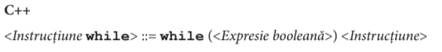
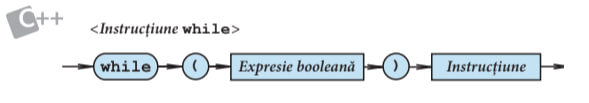
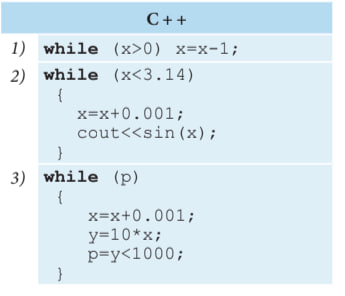
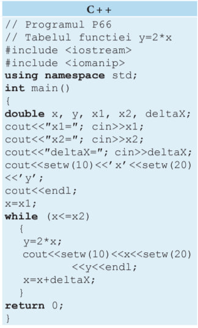
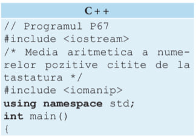
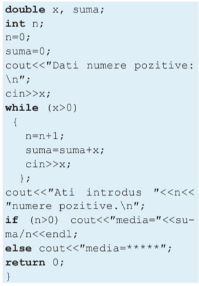

Teorie / Modulul 5
Instrucțiunea While
În acest paragraf vom studia instrucțiunea repetitivă cu test inițial. Această instrucțiune are drept simbol cuvântul-cheie while. Ea conține o expresie booleană care controlează execuția repetată a altei instrucțiuni.
  Instrucțiunea simplă sau compusă din componența instrucțiunii while se execută repetat atâta timp, cât valoarea expresiei booleene este true. Dacă expresia booleană ia valoarea false, instrucțiunea respectivă nu se mai execută. Se recomandă ca expresia booleană să fie cât mai simplă, deoarece ea este evaluată la fiecare iterație.
În mod obișnuit, instrucțiunea while se utilizează pentru organizarea calculelor re- petitive cu variabile de control de tip real.
În programele ce urmează, instrucțiunea while este utilizată pentru afișarea valorilor funcției y=2x. Argumentul x ia valori de la x1 la x2 cu pasul ∆x.
Instrucțiunea while este deosebit de utilă în situația în care numărul de execuții re- petate ale unei secvențe de instrucțiuni e dificil de evaluat.
Pentru exemplificare, prezentăm programul P67, care afișează pe ecran media aritmetică a numerelor pozitive citite de la tastatură.
 Se observă că numărul de execuții repetate ale instrucțiunii compuse din componența instrucțiunii while nu poate fi calculat din timp. Execuția instrucțiunii while se termină când utilizatorul introduce un număr x≤0.